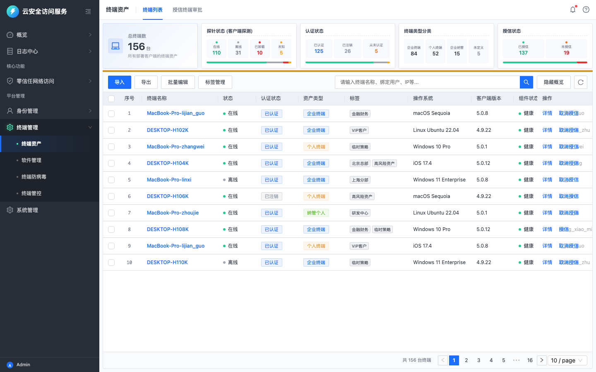
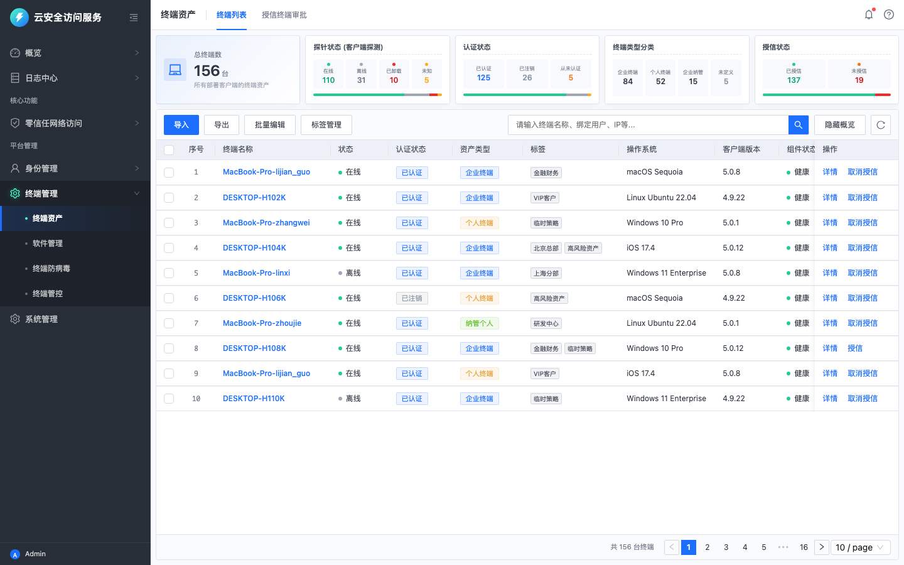
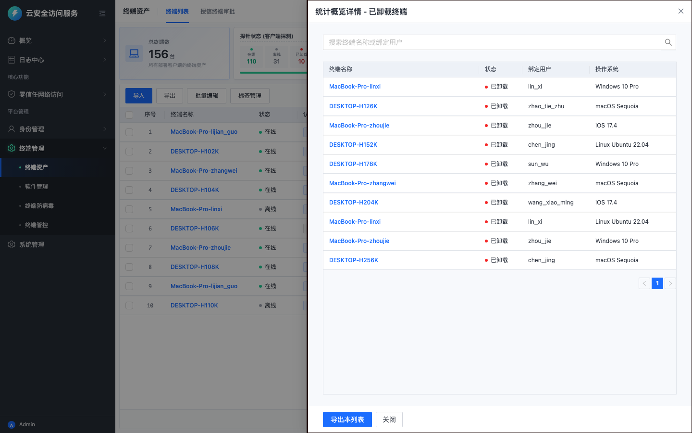

检视场景：场景 1: 体验目标的达成 & 场景 3: 基于体验愿景的方案提质 | 测试角色：企业 IT 网络安全管理员 (5-10年资深运维专家) | 日期：2026-05-18

体验断点分析：管理员进入本页面的首要 Job 是评估企业全局终端的运行态势。当前头部概览区采用 5 张等宽卡片进行扁平罗列，缺乏层次感和视觉焦点，导致 3s 内难以达成感知闭环。
致命缺失：在底层 mock 数据中，系统虽然为终端注入了运行异常（componentStatus: abnormal）的仿真指标，但头部这 5 张概览卡片中**却完全没有任何一处向管理员暴露“运行异常终端数”**这一高危安全状态。这使得管理员处于对客户端异常崩溃、探针损坏的盲区之中，违背了 SASE 高效运维的智能预判愿景。

体验断点分析：您的体验目标明确要求“能够一键筛选出哪些员工没有安装客户端”。然而，在主表格上方的工具栏和检索区中，没有提供任何用于“未安装客户端/已卸载”的一键过滤按钮或 Tab 选项卡。
交互冲突：管理员必须在头部的“探针状态”卡片内，极其艰难地寻找“已卸载”单元格并点击。点击后，系统又错误地弹出一个右侧“ Category List Drawer ”侧边栏，而不是直接在主表格中进行就地（In-place）过滤。这迫使管理员从主页面流中跳出，在狭窄的侧边栏进行局部操作，极大地打断了连续的列表处理旅程。

体验断点分析：当管理员历经繁琐的跳转筛选出哪些员工“未安装/已卸载客户端”后，页面**没有提供任何“一键提醒”、“批量催办”或“推送通知”**的快捷处置按钮。
严重后果：管理员发现安全隐患后，却被迫离开 SASE 平台，采用导出 Excel 并手动通过线下 IM/邮件通知员工的原始方式进行处置。这导致“故障平均修复时间 (MTTR)”极长，严重偏离了 SASE 体验基准中“日常巡检 - 闭环处置指引”的效率底线。
体验断点分析：卡片和列表大量使用“探针状态”、“认证状态”、“终端类型”、“授信状态”等开发视角的底层网络技术术语。对于管理员的业务合规心智而言，人机理解上存在巨大认知负荷。
意图偏离：偏离了 SASE 体验愿景中的“意图驱动 - 去技术化表现”原则，未能将晦涩的底层指标“翻译”为具备业务安全决策价值的管理层语言。
| 问题等级 | 单项扣分 | 扣分上限 | 等级说明 | 特征 |
|---|---|---|---|---|
| P1 (严重) | 10分 | 无上限 | 核心任务流断裂，用户完全无法完成目标或存在重大合规风险。 | 影响核心功能可用性、阻塞性问题、安全违规。 |
| P2 (较重) | 5分 | 无上限 | 显著降低核心功能操作效率，引发强烈挫败感，影响产品信任度。 | 需多次尝试或外部帮助、高频使用场景障碍。 |
| P3 (轻微) | 2分 | 无上限 | 轻微干扰体验，用户可自学习或绕行完成任务，不影响目标达成。 | 次要功能障碍、视觉/交互不一致。 |
| P4 (瑕疵) | 0.5分 | 最多扣3分 | 细微体验瑕疵，仅影响美观或极少数场景，不影响功能决策。 | 仅影响视觉细节或动效、特定条件触发。 |